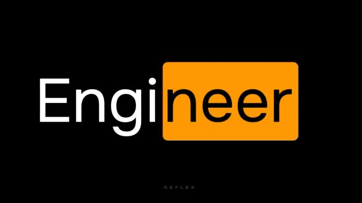

Perfil Ejecutivo
Ingeniero en Sistemas con amplia experiencia en el diseño, desarrollo e implementación de arquitecturas de software robustas y escalables. Especialista en integración continua (CI/CD), optimización de bases de datos y desarrollo backend. Historial comprobado en la resolución técnica de problemas complejos, alineando la infraestructura tecnológica con los objetivos estratégicos de negocio bajo metodologías ágiles.
Competencias Técnicas
Arquitectura y Backend
Java / Spring Boot
Python / Django
Node.js
Microservicios
Infraestructura y DevOps
Git / GitHub Actions
Docker & Kubernetes
AWS (EC2, S3, RDS)
Linux / Bash
Bases de Datos
PostgreSQL
MySQL
MongoDB
Redis
Prácticas y Metodologías
Clean Code
Scrum / Kanban
TDD / Pruebas Unitarias
Experiencia Profesional
Ingeniero de Software Senior
TechSolutions Latam- Diseñé e implementé una arquitectura de microservicios que redujo la latencia del sistema central en un 35%, impactando positivamente la retención de usuarios.
- Lideré la migración de aplicaciones monolíticas legacy hacia un entorno orquestado con Kubernetes, mejorando la disponibilidad del sistema al 99.9%.
- Establecí políticas de revisión de código (Code Reviews) y estándares de calidad para un equipo de 8 desarrolladores.
Desarrollador Full Stack
InnovaTech Sistemas- Desarrollé y mantuve módulos críticos de software financiero, garantizando la seguridad e integridad de transacciones de alto volumen.
- Automaticé procesos de despliegue mediante pipelines CI/CD, reduciendo los tiempos de entrega (Time-to-Market) en un 40%.
Proyectos Relevantes

TallerGit: Infraestructura de Versionamiento
Despliegue de un entorno de control de versiones colaborativo. Diseño de estrategias de ramificación (branching) robustas para la segregación de entornos (main/master) y features (biografia).
Git
Control de Versiones
Shell Scripting
Formación Académica
Ingeniería de Sistemas (Título Profesional)
Universidad Nacional de San Cristóbal de Huamanga- Especialización en Arquitectura de Software y Sistemas Distribuidos.
- Tesis: "Implementación de redes neuronales para la optimización de recursos en clústeres locales".